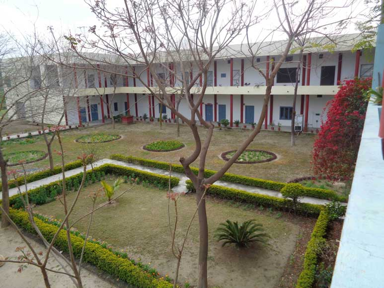

Mision and Objective
Mission Statement
Punjab is an agrarian state. In search of green pastures a good of number of youth of the state has gone or are heading to go or are planning to go abroad. To stem this the exodus of young energy it is the need of the day that these young people be provided useful employment by imparting them technical training. They will prove to be usefully trained workforce for the industry in the state as well as avail themselves of the beneficial opportunity of self -employment. With this mission and vision in sight, this institute has been started. As a result, hundreds of young men have joined business ventures as employees and many have opted to be self employed. This mitigates the squandering of young energy and channels the energy of youth into useful and productive pursuits
Objectives of the Institute :
- To impart technical training to make them expert craftsmen.
- To develop the overall personality of the trainees.
- To make them aware of the latest trends in their field of craftsmanship.
- To make them fit in mind & body by yoga & sports.